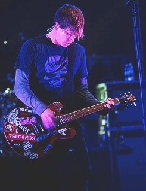
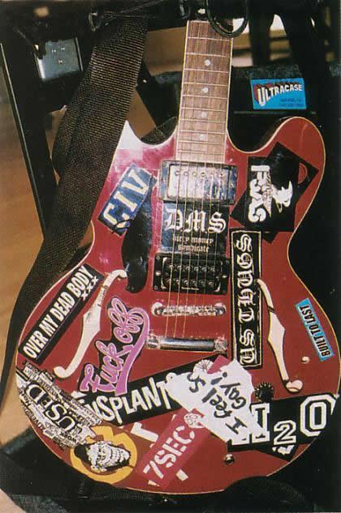

Bio & Career
 Thomas Matthew DeLonge was born in Poway, California, on December 13, 1975,the son of a mortgage broker mother and an oil company executive father.He has a brother named Shon and a sister named Kari.His first musical instrument was a trumpet, which he received as a Christmas gift at age 11.He originally planned to become a firefighter, and participated in the San Diego Cadet Program.He first picked up the guitar from a friend at church camp, and became preoccupied by the instrument.He received his first guitar as a Christmas present from two friends in the sixth grade, which he described as a "beat-up, shitty acoustic guitar that was worth about $30".In the seventh grade, DeLonge visited a friend in Oregon who introduced him to the music of Stiff Little Fingers, the Descendents, and Dinosaur Jr.He consequently dyed his hair purple and began practicing the guitar loudly in his bedroom. He attempted to form a band named Big Oily Men, which was essentially a one-man band because its line-up consisted of whomever he could persuade to join him for short periods.He first began skateboarding in the third grade, and it would consume much of his activity outside of school: "I lived, ate, and breathed skateboarding. All I did all day long was skateboard. It was all I cared about." He and friends would begin at one side of San Diego and attempt to skateboard to the other half, pranking people in the process. As such, he was an average student and later said, "I knew exactly how hard I had to work in school. As long as I got that C, I wouldn't try one minute extra to get a B. I just cared about skateboarding and music."DeLonge's parents were constantly fighting in his formative years, culminating in a divorce when he was 18. Shortly thereafter, his mother lost her job. He promptly moved out, feeling as though he needed to start his own life; his brother was also away at that time in the Army, and his departure affected his family: "My mom and sister were left asking, 'What happened to our family?'" Following high school, he worked on construction sites, where he drove a Diesel truck and handled concrete and piping: "I hated, hated, hated my job. You know those people who hate their job? That was me."He quit when Blink-182 signed to MCA Records in 1996.
Side Projects
His projects:
-
Business
In 2011, DeLonge launched Strange Times, a website devoted to extraterrestrial life, paranormal activity, cryptozoology, and conspiracy theories. All of DeLonge's business entities exist under the RLP moniker, with the exception of Atticus Clothing, which was sold in 2005. -
Film
DeLonge approached filmmaking when he directed the music video for the song "This Photograph is Proof (I Know You Know)" by Taking Back Sunday in 2004. He was fascinated by the medium, calling the process "so artistically satisfying", and he has since worked in film on Angels & Airwaves-related projects. In 2014, he co-directed the animated short film Poet Anderson: The Dream Walker. -
Conspiracy theories and aliens
In 2019, the company produced the History Channel television show Unidentified: Inside America's UFO Investigation, about the USS Nimitz UFO incident, which also features DeLonge. In April 2020, the Pentagon officially declassified three videos which had been previously leaked by people claiming they showed UFOs; DeLonge had previously released the videos through his company in 2017.
The Reason:
In the wake of Blink-182's break-up, DeLonge underwent a complete reassessment of his prime concerns—a move "bearing the hallmarks of a nervous breakdown"—and went on a three-week "spiritual journey" in complete isolation away from his family, contemplating his life, career, and future in music. DeLonge felt psychologically hurt by the band's dissolution, likening it to a divorce and calling it a "traumatic experience" and a "disaster". He had been known for his role in the Blink-182 as "the low-brow prankster" and wanted to restart his career without worrying whether fans would find him funny.
Skills:
Tom has been playing guitar since he was 15 years old and his skill is quite high. He is one of the top 50 guitarists in the world.
He is also a pro skater with over 20 years of experience.
From 2015 to the present day, he has been studying space and hunting UFOs.